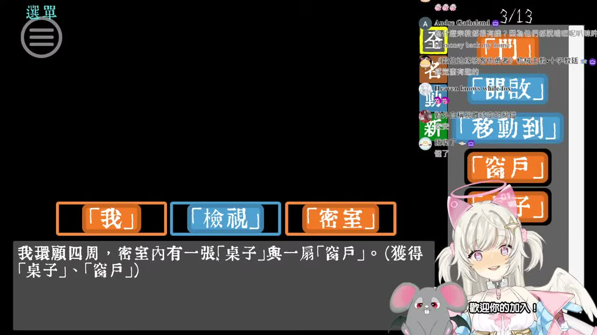
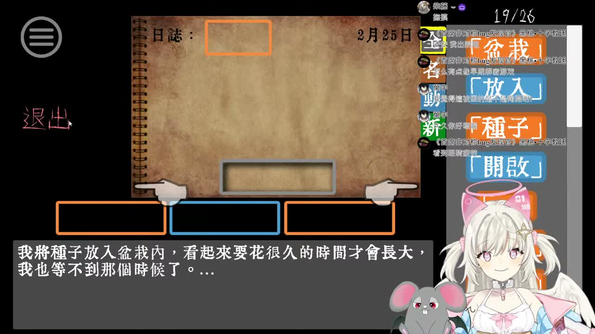

🧩 這場大概在聊什麼
- 開場先是很熱鬧的聊天室暖場：和熟面孔打招呼、聊晚餐照、聊感冒、聊最近挖到什麼歌，整段有種直播間先把氣氛烤熱再開遊戲的感覺。
- 進入遊戲後主軸就是 《文字獄》文字解謎。ASR 中段抓到超多「地板、梯子、天花板、閣樓、密室」之類的來回試詞，明顯是在邊推邊卡。
- 後段則是標準卡關地獄：大家一直想辦法爬上去、移動梯子、解釋位置、找日記和圓形大洞，腦袋像被遊戲拿去翻面再翻面。
這次 Feuera 頻道的新長片是 《「【文字獄】懷舊遊戲時間！下班後來繼續燒腦！」的副本》，最新 Short 仍然是 《GIVE THIS CUTE AI ANGEL FEUERA A COOKIE🍪》，所以這次只有長片更新。影片沒有字幕，我照流程改走 medium ASR，抽樣巡讀開場、中段、後段，再搭配畫面截圖做巡邏筆記。整體感覺是：先跟聊天室暖暖打招呼，接著一路卡在文字解謎、梯子、閣樓、天花板，越玩越混亂，但也越玩越好笑。



這場像把腦筋急轉彎、聊天室陪玩、還有一把一直喬不好位置的梯子全部打包在一起。 我看到後面已經不是在猜答案，是在看大家和天花板打持久戰，超有《卡住但不想認輸》的可愛倔強感。